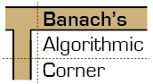

Recently it was shown that PLS is not contained in PPADS (ECCC report TR22-058). We show that this separation already implies that PLS is not contained in PPP. These separations are shown for the decision tree model of TFNP and imply similar separations in the type-2, relativized model.
Important note. This manuscript is based on an early preprint of report TR22-058, which did not contain the result that PLS is not contained in PPP. Our work is superseded by the revised version of the report of 10 June 2022 which, independently, contains this result. The manuscript has not been edited to reflect this, and in particular references to the report are to the early version.
Theory of Computing Blog Aggregator
In previous posts we showed that the classic Dolev-Strong broadcast protocol takes $O(n^3)$ words and $t+1$ rounds and that Dolev Reischuk show that $\Omega(n^2)$ is needed and it is also known that $t+1$ rounds are needed. So while the number of rounds is optimal, to this day it remains an...

Authors: Ojas Parekh, Kevin Thompson
Download: PDF
Abstract: We resolve the approximability of the maximum energy of the Quantum Max Cut
(QMC) problem using product states. A classical 0.498-approximation, using a
basic semidefinite programming relaxation, is known for QMC, paralleling the
celebrated 0.878-approximation for classical Max Cut. For Max Cut, improving
the 0.878-approximation is Unique-Games-hard (UG-hard), and one might expect
that improving the 0.498-approximation is UG-hard for QMC. In contrast, we give
a classical 1/2-approximation for QMC that is unconditionally optimal, since
simple examples exhibit a gap of 1/2 between the energies of an optimal product
state and general quantum state. Our result relies on a new nonlinear monogamy
of entanglement inequality on a triangle that is derived from the second level
of the quantum Lasserre hierarchy. This inequality also applies to the quantum
Heisenberg model, and our results generalize to instances of Max 2-Local
Hamiltonian where each term is positive and has no 1-local parts. Finally, we
give further evidence that product states are essential for approximations of
2-Local Hamiltonian.
Authors: Jakub Gajarský, Michał Pilipczuk, Wojciech Przybyszewski, Szymon Toruńczyk
Download: PDF
Abstract: We study problems connected to first-order logic in graphs of bounded
twin-width. Inspired by the approach of Bonnet et al. [FOCS 2020], we introduce
a robust methodology of local types and describe their behavior in contraction
sequences -- the decomposition notion underlying twin-width. We showcase the
applicability of the methodology by proving the following two algorithmic
results. In both statements, we fix a first-order formula
$\varphi(x_1,\ldots,x_k)$ and a constant $d$, and we assume that on input we
are given a graph $G$ together with a contraction sequence of width at most
$d$.
(A) One can in time $O(n)$ construct a data structure that can answer the following queries in time $O(\log \log n)$: given $w_1,\ldots,w_k$, decide whether $\phi(w_1,\ldots,w_k)$ holds in $G$.
(B) After $O(n)$-time preprocessing, one can enumerate all tuples $w_1,\ldots,w_k$ that satisfy $\phi(x_1,\ldots,x_k)$ in $G$ with $O(1)$ delay.
In the case of (A), the query time can be reduced to $O(1/\varepsilon)$ at the expense of increasing the construction time to $O(n^{1+\varepsilon})$, for any fixed $\varepsilon>0$. Finally, we also apply our tools to prove the following statement, which shows optimal bounds on the VC density of set systems that are first-order definable in graphs of bounded twin-width.
(C) Let $G$ be a graph of twin-width $d$, $A$ be a subset of vertices of $G$, and $\varphi(x_1,\ldots,x_k,y_1,\ldots,y_l)$ be a first-order formula. Then the number of different subsets of $A^k$ definable by $\phi$ using $l$-tuples of vertices from $G$ as parameters, is bounded by $O(|A|^l)$.
Authors: Marin Bougeret, Jérémy Omer, Michael Poss
Download: PDF
Abstract: Many combinatorial optimization problems can be formulated as the search for
a subgraph that satisfies certain properties and minimizes the total weight. We
assume here that the vertices correspond to points in a metric space and can
take any position in given uncertainty sets. Then, the cost function to be
minimized is the sum of the distances for the worst positions of the vertices
in their uncertainty sets. We propose two types of polynomial-time
approximation algorithms. The first one relies on solving a deterministic
counterpart of the problem where the uncertain distances are replaced with
maximum pairwise distances. We study in details the resulting approximation
ratio, which depends on the structure of the feasible subgraphs and whether the
metric space is Ptolemaic or not. The second algorithm is a fully-polynomial
time approximation scheme for the special case of $s-t$ paths.
Authors: Alexander Kravberg, Giovanni Luca Marchetti, Vladislav Polianskii, Anastasiia Varava, Florian T. Pokorny, Danica Kragic
Download: PDF
Abstract: We introduce an algorithm for active function approximation based on nearest
neighbor regression. Our Active Nearest Neighbor Regressor (ANNR) relies on the
Voronoi-Delaunay framework from computational geometry to subdivide the space
into cells with constant estimated function value and select novel query points
in a way that takes the geometry of the function graph into account. We
consider the recent state-of-the-art active function approximator called DEFER,
which is based on incremental rectangular partitioning of the space, as the
main baseline. The ANNR addresses a number of limitations that arise from the
space subdivision strategy used in DEFER. We provide a computationally
efficient implementation of our method, as well as theoretical halting
guarantees. Empirical results show that ANNR outperforms the baseline for both
closed-form functions and real-world examples, such as gravitational wave
parameter inference and exploration of the latent space of a generative model.
Authors: Bruno Ordozgoiti, Antonis Matakos, Aristides Gionis
Download: PDF
Abstract: In problems involving matrix computations, the concept of leverage has found
a large number of applications. In particular, leverage scores, which relate
the columns of a matrix to the subspaces spanned by its leading singular
vectors, are helpful in revealing column subsets to approximately factorize a
matrix with quality guarantees. As such, they provide a solid foundation for a
variety of machine-learning methods. In this paper we extend the definition of
leverage scores to relate the columns of a matrix to arbitrary subsets of
singular vectors. We establish a precise connection between column and
singular-vector subsets, by relating the concepts of leverage scores and
principal angles between subspaces. We employ this result to design
approximation algorithms with provable guarantees for two well-known problems:
generalized column subset selection and sparse canonical correlation analysis.
We run numerical experiments to provide further insight on the proposed
methods. The novel bounds we derive improve our understanding of fundamental
concepts in matrix approximations. In addition, our insights may serve as
building blocks for further contributions.
Authors: Vladislav Polianskii, Giovanni Luca Marchetti, Alexander Kravberg, Anastasiia Varava, Florian T. Pokorny, Danica Kragic
Download: PDF
Abstract: The Voronoi Density Estimator (VDE) is an established density estimation
technique that adapts to the local geometry of data. However, its applicability
has been so far limited to problems in two and three dimensions. This is
because Voronoi cells rapidly increase in complexity as dimensions grow, making
the necessary explicit computations infeasible. We define a variant of the VDE
deemed Compactified Voronoi Density Estimator (CVDE), suitable for higher
dimensions. We propose computationally efficient algorithms for numerical
approximation of the CVDE and formally prove convergence of the estimated
density to the original one. We implement and empirically validate the CVDE
through a comparison with the Kernel Density Estimator (KDE). Our results
indicate that the CVDE outperforms the KDE on sound and image data.
Authors: Peter Bartlett, Piotr Indyk, Tal Wagner
Download: PDF
Abstract: Data-driven algorithms can adapt their internal structure or parameters to
inputs from unknown application-specific distributions, by learning from a
training sample of inputs. Several recent works have applied this approach to
problems in numerical linear algebra, obtaining significant empirical gains in
performance. However, no theoretical explanation for their success was known.
In this work we prove generalization bounds for those algorithms, within the PAC-learning framework for data-driven algorithm selection proposed by Gupta and Roughgarden (SICOMP 2017). Our main results are closely matching upper and lower bounds on the fat shattering dimension of the learning-based low rank approximation algorithm of Indyk et al.~(NeurIPS 2019). Our techniques are general, and provide generalization bounds for many other recently proposed data-driven algorithms in numerical linear algebra, covering both sketching-based and multigrid-based methods. This considerably broadens the class of data-driven algorithms for which a PAC-learning analysis is available.
Authors: Jan Kynčl, Marcus Schaefer, Eric Sedgwick, Daniel Štefankovič
Download: PDF
Abstract: For every $n$, we construct two curves in the plane that intersect at least
$n$ times and do not form spirals. The construction is in three stages: we
first exhibit closed curves on the torus that do not form double spirals, then
arcs on the torus that do not form spirals, and finally pairs of planar arcs
that do not form spirals. These curves provide a counterexample to a proof of
Pach and T\'{o}th concerning string graphs.
Authors: Jimmy Wu, Yatong Chen, Yang Liu
Download: PDF
Abstract: We study the problem of \emph{classifier derandomization} in machine
learning: given a stochastic binary classifier $f: X \to [0,1]$, sample a
deterministic classifier $\hat{f}: X \to \{0,1\}$ that approximates the output
of $f$ in aggregate over any data distribution. Recent work revealed how to
efficiently derandomize a stochastic classifier with strong output
approximation guarantees, but at the cost of individual fairness -- that is, if
$f$ treated similar inputs similarly, $\hat{f}$ did not. In this paper, we
initiate a systematic study of classifier derandomization with metric fairness
guarantees. We show that the prior derandomization approach is almost maximally
metric-unfair, and that a simple ``random threshold'' derandomization achieves
optimal fairness preservation but with weaker output approximation. We then
devise a derandomization procedure that provides an appealing tradeoff between
these two: if $f$ is $\alpha$-metric fair according to a metric $d$ with a
locality-sensitive hash (LSH) family, then our derandomized $\hat{f}$ is, with
high probability, $O(\alpha)$-metric fair and a close approximation of $f$. We
also prove generic results applicable to all (fair and unfair) classifier
derandomization procedures, including a bias-variance decomposition and
reductions between various notions of metric fairness.
The Institute of Mathematics & its Applications tells us that applications of the Reuleaux triangle include “the cross-section of some pencils that are thought to be more ergonomic than traditional hexagonal ones”. It it true?
It’s a bit difficult to tell, because there are many brands of triangular pencil and they don’t all come with easy-to-interpret cross-sections or dimensions. A true Reuleaux triangle pencil would have a cross section with rounded sides and 120° corners, making the same angle as the corners of a hexagonal pencil, as shown in the upper left cross-section of the figure below.

Instead, all the ones I found online appear to fall into two other classes of shapes: flat-sided triangles with rounded-off corners (lower left of the figure) or smooth three-lobed shapes with no corners at all (lower right). Here are some:
-
The best image I could find of the Dixon Tri-Conderoga is this brief post by Woodclinched. It appears to be a smooth three-lobed shape. Dixon also produce a “Tri-Write” triangular pencil, aimed at a lower-level market than the Tri-Conderoga; the 2021 Dixon product catalog shows both it and the Tri-Conderoga as having a cross-section with slightly rounded sides (flatter than a Reuleaux triangle but not completely flat) and rounded corners.
-
The Faber-Castell Grip 2001 is another three-sided pencil, with added bumps on its sides to make it grippier. If we ignore the bumps for the purpose of determining its shape, Pencil Talk shows it as a flat triangle with rounded corners.
-
The Koh-I-Noor Triograph, as shown in a review by Pencil Talk, has rounded corners, and flat-enough sides to clearly print the brand name in large letters on it.
-
The Lyra Ferby is a German children’s brand with a smooth three-lobed shape.
-
The Marco Grip-Rite appears, from its review by Polar Pencil Pusher, to have a smooth three-lobed cross-section, even though the review calls it a Reuleaux triangle.
-
The Micador ColouRush Jumbo Triangular Pencils (an Asutralian branch of children’s pencils) have a cross-section image on the manufacturer website clearly showing a flat triangle with rounded corners.
-
PaperMate make several triangular writing tools under the “Handwriting” brand, including PaperMate Handwriting woodcase pencils, aimed at children. I couldn’t find a good image of a cross-section of one, but their mechanical pencil in the same branch is clearly a smooth three-lobed shape. Pencil Revolution appears to show a similar shape for the wood pencils.
-
I don’t know what brand of pencils the IMA used for the photo of their example, but it appears to be one with flat sides and rounded corners.
I also didn’t find pencils with flat-sided triangles (and non-rounded or only very lightly rounded corners) as their cross-sections. But if you search for “triangle pencil” you will find plenty of colorful plastic things with that shape that you can slide over your pencil to make it easier to hold.
I can’t tell you whether any of these are any good to write or draw with; for that, I prefer fountain pens. (I don’t have an Omas 360, but that one really does appear to be based on a Reuleaux triangle.) Beyond writing, if you’re hoping for a pencil that doubles as a constant-width roller for rolling your books smoothly across your desk, and don’t want boring circular pencils, the smooth three-lobed ones may be your best bet. The one I drew above really is a curve of constant width. It’s just not a Reuleaux triangle.
This has been yet another episode of “things that are not Reuleaux triangles”. See previously a triangular bottle, the Kölntriangle, rotors within rotors, a Polish football logo, Wankel engines, and many more.
by David Eppstein at June 18, 2022 04:42 PM UTC

The 5th TCS Women Spotlight Workshop, organized by Elena Grigorescu (Purdue), Barna Saha (UCSD), Virginia Vassilevska Williams (MIT), and Mary Wootters (Stanford), is happening on Monday, 8:45 am Rome Time (GMT+2), as part of STOC’22. To attend the workshop in person, just show up! You can also join online for free (no STOC registration required!), by just registering here. The event is open to all.
The workshop features an inspiring series of speakers — including an Inspiration talk by Irit Dinur: “Expansion, PCPs, and high dimensional expansion, or How I re-proved the PCP theorem and how I hope to do it again”; as well as Rising star talks by six stellar women researchers, soon to be on the job market: Sami Davies (Northwestern), Tamalika Mukherjee (Purdue), Aditi Dudeja (Rutgers), Charlie Carlson (Colorado Boulder), Yasamin Nazari (Johns Hopkins), and Jessica Sorrell (UCSD).
For more information on the workshop, program, and talks, see the website.
by ccanonne at June 18, 2022 04:12 AM UTC
Authors: Guillaume Theyssier
Download: PDF
Abstract: This tutorial is about cellular automata that exhibit 'cold dynamics'. By
this we mean zero entropy, stabilization of all orbits, trivial asymptotic
dynamics, etc. These are purely transient irreversible dynamics, but they
capture many examples from the literature. A rich zoo of properties is
presented and discussed: nilpotency and asymptotic, generic or mu-variants,
unique ergodicity, convergence, bounded-changeness, freezingness. They all
correspond to the 'cold dynamics' paradigm in some way, and we study their
links and differences by various examples and results from the literature.
Besides dynamical considerations, we also focus on computational aspects: we
show how such 'cold cellular automata' can still compute under their dynamical
constraint, and what are their computational limitation.
I have some exciting news (for me, anyway). Starting next week, I’ll be going on leave from UT Austin for one year, to work at OpenAI. They’re the creators of the astonishing GPT-3 and DALL-E2, which have not only endlessly entertained me and my kids, but recalibrated my understanding of what, for better and worse, the world is going to look like for the rest of our lives. Working with an amazing team at OpenAI, including Jan Leike, John Schulman, and Ilya Sutskever, my job will be think about the theoretical foundations of AI safety and alignment. What, if anything, can computational complexity contribute to a principled understanding of how to get an AI to do what we want and not do what we don’t want?
Yeah, I don’t know the answer either. That’s why I’ve got a whole year to try to figure it out! One thing I know for sure, though, is that I’m interested both in the short-term, where new ideas are now quickly testable, and where the misuse of AI for spambots, surveillance, propaganda, and other nefarious purposes is already a major societal concern, and the long-term, where one might worry about what happens once AIs surpass human abilities across nearly every domain. (And all the points in between: we might be in for a long, wild ride.) When you start reading about AI safety, it’s striking how there are two separate communities—the one mostly worried about machine learning perpetuating racial and gender biases, and the one mostly worried about superhuman AI turning the planet into goo—who not only don’t work together, but are at each other’s throats, with each accusing the other of totally missing the point. I persist, however, in the possibly-naïve belief that these are merely two extremes along a single continuum of AI worries. By figuring out how to align AI with human values today—constantly confronting our theoretical ideas with reality—we can develop knowledge that will give us a better shot at aligning it with human values tomorrow.
For family reasons, I’ll be doing this work mostly from home, in Texas, though traveling from time to time to OpenAI’s office in San Francisco. I’ll also spend 30% of my time continuing to run the Quantum Information Center at UT Austin and working with my students and postdocs. At the end of the year, I plan to go back to full-time teaching, writing, and thinking about quantum stuff, which remains my main intellectual love in life, even as AI—the field where I started, as a PhD student, before I switched to quantum computing—has been taking over the world in ways that none of us can ignore.
Maybe fittingly, this new direction in my career had its origins here on Shtetl-Optimized. Several commenters, including Max Ra and Matt Putz, asked me point-blank what it would take to induce me to work on AI alignment. Treating it as an amusing hypothetical, I replied that it wasn’t mostly about money for me, and that:
The central thing would be finding an actual potentially-answerable technical question around AI alignment, even just a small one, that piqued my interest and that I felt like I had an unusual angle on. In general, I have an absolutely terrible track record at working on topics because I abstractly feel like I “should” work on them. My entire scientific career has basically just been letting myself get nerd-sniped by one puzzle after the next.
Anyway, Jan Leike at OpenAI saw this exchange and wrote to ask whether I was serious in my interest. Oh shoot! Was I? After intensive conversations with Jan, others at OpenAI, and others in the broader AI safety world, I finally concluded that I was.
I’ve obviously got my work cut out for me, just to catch up to what’s already been done in the field. I’ve actually been in the Bay Area all week, meeting with numerous AI safety people (and, of course, complexity and quantum people), carrying a stack of technical papers on AI safety everywhere I go. I’ve been struck by how, when I talk to AI safety experts, they’re not only not dismissive about the potential relevance of complexity theory, they’re more gung-ho about it than I am! They want to talk about whether, say, IP=PSPACE, or MIP=NEXP, or the PCP theorem could provide key insights about how we could verify the behavior of a powerful AI. (Short answer: maybe, on some level! But, err, more work would need to be done.)
How did this complexitophilic state of affairs come about? That brings me to another wrinkle in the story. Traditionally, students follow in the footsteps of their professors. But in trying to bring complexity theory into AI safety, I’m actually following in the footsteps of my student: Paul Christiano, one of the greatest undergrads I worked with in my nine years at MIT, the student whose course project turned into the Aaronson-Christiano quantum money paper. After MIT, Paul did a PhD in quantum computing at Berkeley, with my own former adviser Umesh Vazirani, while also working part-time on AI safety. Paul then left quantum computing to work on AI safety full-time—indeed, along with others such as Dario Amodei, he helped start the safety group at OpenAI. Paul has since left to found his own AI safety organization, the Alignment Research Center (ARC), although he remains on good terms with the OpenAI folks. Paul is largely responsible for bringing complexity theory intuitions and analogies into AI safety—for example, through the “AI safety via debate” paper and the Iterated Amplification paper. I’m grateful for Paul’s guidance and encouragement—as well as that of the others now working in this intersection, like Geoffrey Irving and Elizabeth Barnes—as I start this new chapter.
So, what projects will I actually work on at OpenAI? Yeah, I’ve been spending the past week trying to figure that out. I still don’t know, but a few possibilities have emerged. First, I might work out a general theory of sample complexity and so forth for learning in dangerous environments—i.e., learning where making the wrong query might kill you. Second, I might work on explainability and interpretability for machine learning: given a deep network that produced a particular output, what do we even mean by an “explanation” for “why” it produced that output? What can we say about the computational complexity of finding that explanation? Third, I might work on the ability of weaker agents to verify the behavior of stronger ones. Of course, if P≠NP, then the gap between the difficulty of solving a problem and the difficulty of recognizing a solution can sometimes be enormous. And indeed, even in empirical machine learing, there’s typically a gap between the difficulty of generating objects (say, cat pictures) and the difficulty of discriminating between them and other objects, the latter being easier. But this gap typically isn’t exponential, as is conjectured for NP-complete problems: it’s much smaller than that. And counterintuitively, we can then turn around and use the generators to improve the discriminators. How can we understand this abstractly? Are there model scenarios in complexity theory where we can prove that something similar happens? How far can we amplify the generator/discriminator gap—for example, by using interactive protocols, or debates between competing AIs?
OpenAI, of course, has the word “open” right in its name, and a founding mission “to ensure that artificial general intelligence benefits all of humanity.” But it’s also a for-profit enterprise, with investors and paying customers and serious competitors. So throughout the year, don’t expect me to share any proprietary information—that’s not my interest anyway, even if I hadn’t signed an NDA. But do expect me to blog my general thoughts about AI safety as they develop, and to solicit feedback from readers.
In the past, I’ve often been skeptical about the prospects for superintelligent AI becoming self-aware and destroying the world anytime soon (see, for example, my 2008 post The Singularity Is Far). While I was aware since 2005 or so of the AI-risk community; and of its leader and prophet, Eliezer Yudkowsky; and of Eliezer’s exhortations for people to drop everything else they’re doing and work on AI risk, as the biggest issue facing humanity, I … kept the whole thing at arms’ length. Even supposing I agreed that this was a huge thing to worry about, I asked, what on earth do you want me to do about it today? We know so little about a future superintelligent AI and how it would behave that any actions we took today would likely be useless or counterproductive.
Over the past 15 years, though, my and Eliezer’s views underwent a dramatic and ironic reversal. If you read Eliezer’s “litany of doom” from two weeks ago, you’ll see that he’s now resigned and fatalistic: because his early warnings weren’t heeded, he argues, humanity is almost certainly doomed and an unaligned AI will soon destroy the world. He says that there are basically no promising directions in AI safety research: for any alignment strategy anyone points out, Eliezer can trivially refute it by explaining how (e.g.) the AI would be wise to the plan, and would pretend to go along with whatever we wanted from it while secretly plotting against us.
The weird part is, just as Eliezer became more and more pessimistic about the prospects for getting anywhere on AI alignment, I’ve become more and more optimistic. Part of my optimism is because people like Paul Christiano have laid foundations for a meaty mathematical theory: much like the Web (or quantum computing theory) in 1992, it’s still in a ridiculously primitive stage, but even my limited imagination now suffices to see how much more could be built there. An even greater part of my optimism is because we now live in a world with GPT-3, DALL-E2, and other systems that, while they clearly aren’t AGIs, are powerful enough that worrying about AGIs has come to seem more like prudence than like science fiction. And we can finally test our intuitions against the realities of these systems, which (outside of mathematics) is pretty much the only way human beings have ever succeeded at anything.
I didn’t predict that machine learning models this impressive would exist by 2022. Most of you probably didn’t predict it. For godsakes, Eliezer Yudkowsky didn’t predict it. But it’s happened. And to my mind, one of the defining virtues of science is that, when empirical reality gives you a clear shock, you update and adapt, rather than expending your intelligence to come up with clever reasons why it doesn’t matter or doesn’t count.
Anyway, so that’s the plan! If I can figure out a way to save the galaxy, I will, but I’ve set my goals slightly lower, at learning some new things and doing some interesting research and writing some papers about it and enjoying a break from teaching. Wish me a non-negligible success probability!
Update (June 18): To respond to a couple criticisms that I’ve seen elsewhere on social media…
Can the rationalists sneer at me for waiting to get involved with this subject until it had become sufficiently “respectable,” “mainstream,” and ”high-status”? I suppose they can, if that’s their inclination. I suppose I should be grateful that so many of them chose to respond instead with messages of congratulations and encouragement. Yes, I plead guilty to keeping this subject at arms-length until I could point to GPT-3 and DALL-E2 and the other dramatic advances of the past few years to justify the reality of the topic to anyone who might criticize me. It feels internally like I had principled reasons for this: I can think of almost no examples of research programs that succeeded over decades even in the teeth of opposition from the scientific mainstream. If so, then arguably the best time to get involved with a “fringe” scientific topic, is when and only when you can foresee a path to it becoming the scientific mainstream. At any rate, that’s what I did with quantum computing, as a teenager in the mid-1990s. It’s what many scientists of the 1930s did with the prospect of nuclear chain reactions. And if I’d optimized for getting the right answer earlier, I might’ve had to weaken the filters and let in a bunch of dubious worries that would’ve paralyzed me. But I admit the possibility of self-serving bias here.
Should you worry that OpenAI is just hiring me to be able to say “look, we have Scott Aaronson working on the problem,” rather than actually caring about what its safety researchers come up with? I mean, I can’t prove that you shouldn’t worry about that. In the end, whatever work I do on the topic will have to speak for itself. For whatever it’s worth, though, I was impressed by the OpenAI folks’ detailed, open-ended engagement with these questions when I met them—sort of like how it might look if they actually believed what they said about wanting to get this right for the world. I wouldn’t have gotten involved otherwise.
by Scott at June 17, 2022 11:39 PM UTC

- It is still not too late to find a cheap flight to Warsaw. This includes Rome (see our suggestions in the previous email/post).
- We have a few unused slots for talks. Our plan is to open them to online participants who are students or postdocs. If you are a student or postdoc and want to give a talk remotely, via Zoom, please submit your title and abstract preferably by Monday via the registration form at https://ideas-ncbr.pl/en/wola/registration/ (If you have already registered, please register again.)
If you have any time constraints, please indicate them at the beginning of the abstract (use Warsaw local time) and we will do our best to find a working slot. If there are a lot of submissions, we may assign less time to each talk and if this does not help, we may assign slots on the first–come first–serve basis. - If you have not registered but you are coming in person, please do this ASAP. If you are planning on joining remotely, this will also help us with keeping you updated.
by sank at June 17, 2022 07:31 PM UTC
The tireless Clément Canonne is the open problem chair for COLT 2022. He asked to share this call for open problems. Please submit your best!
The 35th Annual Conference on Learning Theory (COLT 2022), to be held in London on July 2-5 and remotely, will follow in the footsteps of previous editions and feature an Open Problems session, where attendees can present their open problems and suggest them to the learning community — and possibly offer prizes for their resolution! (After all, a little incentive goes a long way…)
The deadline to submit an open problem has been extended to Monday June 20, 4pm PDT. If you have any nagging question or stubborn problem, please submit them!
More information and CfP: https://learningtheory.org/colt2022/cfp.html#openproblems
by Gautam at June 17, 2022 04:46 PM UTC

[To further prove that I am not a longtermist, here is a guest post by Clément about activities in STOC that will happen next week. –Boaz]
UPDATE: Don’t miss the TCS Women Spotlight Workshop Monday, June 20th, 8:45 am – 11:450 am Rome Time. Irit Dinur will give a talk on “How I re-proved the PCP theorem and how I hope to do it again” and there will be six rising star talks by Sami Davies (Northwestern), Tamalika Mukherjee (Purdue), Aditi Dudeja (Rutgers), Charlie Carlson (Colorado Boulder), Yasamin Nazari (Johns Hopkins), and Jessica Sorrell (UCSD). Register on https://form.jotform.com/221605322816045
The 54th Annual ACM Symposium on Theory of Computing (STOC’22) is starting next week in Rome, as part of the broader TheoryFest. Now, while this probably is not coming as a surprise to you, did you now about the social and mentoring events at STOC, which, not to miss a good portmanteau when one sees one,* we shall refer henceforth as STOCial’22?
Organised by Federico Fusco, Tegan Wilson, Mary Wootters, and myself, STOCial’22 includes a bonanza of activities, games, and fun, including (but not limited to):
- a student lunch!
- two senior/junior lunches!
- cartoon caption contests!
- a scavenger hunt!

- a STOC-themed crossword!
- a game of socc… football!

- PRIZES!

To learn more about those, and sign up to the student or senior/junior lunches: https://sites.google.com/view/stocial-2022
See you next week!
Clément Canonne
* If someone finds a palindrome instead, let me know. I would love a good pal in Rome.
by Boaz Barak at June 17, 2022 02:42 PM UTC

In his comment to the previous post by Igor Pak, Joe Malkevitch referred us to a wonderful paper by Richard Stanley on enumerative and algebraic combinatorics in the 1960’s and 1970’s.
See also this post on Richard’s memories regarding the proof of the upper bound theorem for spheres Richard Stanley: How the Proof of the Upper Bound Theorem (for spheres) was Found.
by Gil Kalai at June 17, 2022 05:57 AM UTC
Another great post by Igor Pak
Apologies for not writing anything for awhile. After Feb 24, the math part of the “” slogan lost a bit of relevance, while the actual events were stupefying to the point when I had nothing to say about the life part. Now that the shock subsided, let me break the silence by telling an old personal story which is neither relevant to anything happening right now nor a lesson to anyone. Sometimes a story is just a story…
My field
As the readers of this blog know, I am a . Not a “proud one”. Just “a combinatorialist”. To paraphrase a military slogan “there are many fields like this one, but this one is mine”. While I’ve been defending my field for years, writing about its struggles, and often defining it, it’s not because this field is more important than others. Rather, because it’s so…
View original post 1,095 more words
by Gil Kalai at June 16, 2022 11:38 AM UTC
A day or two after publishing my TL;DR on Wordle algorithms, I stumbled on a remarkable paper that neatly summarizes all the main ideas. The remarkable part is that the paper was written 50 years before Wordle was invented!
The paper is “Information Theory and the Game of Jotto,” issued in August of 1971 as Artificial Intelligence Memo No. 28 from the AI Lab at MIT. The author was Michael D. Beeler, known to me mainly as one of the three principal authors of HAKMEM (the others were Bill Gosper and Rich Schroeppel). Beeler later worked at Bolt, Baranek, and Newman, an MIT spinoff.
Wikipedia tells me that Jotto was invented in 1955 by Morton M. Rosenfeld as a game for two players. As in Wordle, you try to discover a secret word by submitting guess words and getting feedback about how close you have come to the target. The big difference is that JOTTO’s feedback offers only a crude measure of closeness. You learn the number of letters in your guess word that match one of the letters in the target word. You get no indication of which letters match, or whether they are in the correct positions.
The unit of measure for closeness is the jot. Beeler gives the example of playing GLASS against SMILE, which earns a closeness score of two jots, since there are matches for the letter L and for one S. Unlike the Wordle feedback rule, this scoring scheme is symmetric: The score remains the same if you switch the roles of guess and target word.
A defect of the game, in my view, is that you can max out the score at five jots and still not know the target word. For example, when a five-jot score tells you that the letters of the target are {A, E, G, L, R}, the word could be GLARE, LAGER, LARGE, or REGAL. Your only way to pin down the answer is to guess them in sequence.
Beeler’s main topic is not how the game proceeds between human players but how a computer can be programmed to take the role of a player. He reports that “A JOTTO program has existed for a couple of years at MIT’s A.I. Lab,” meaning it was created sometime in the late 1960s. He says nothing about who wrote this program. I’m going to make the wild surmise that Beeler himself might have been the author, particularly given his intimate knowledge of the program’s innards.
Here’s the crucial passage, lifted directly from the memo:

The strategy described here—maximizing the information gain from each guess—is exactly what’s recommended for Wordle. But where Wordle divvies up the potential target words into \(3^5 = 243\) subsets, the JOTTO scoring rule defines only six categories (0 through 5 jots). As a result, the maximum possible information gain is only about 2.6 bits in JOTTO, compared with almost 8 bits in Wordle.
Beeler also recognized a limitation of this “greedy” strategy. “It is conceivable that the test word with the highest expectation at the current point in the game has a good chance of getting us to a point where we will NOT have any particularly good test words available . . . I am indebted to Bill Gosper for pointing out this possibility; the computation required, however, is impractical, and besides, the program seems to do acceptably as is.”
The JOTTO program was written in the assembly language of the PDP-6 and PDP-10 family of machines from the Digital Equipment Corporation, which were much loved in that era at MIT. (Beeler praises the instruction set as “very symmetrical, complete, powerful and easy to think in.”) But however elegant the architecture, physical resources were cramped, with a maximum memory capacity of about one megabyte. Nevertheless, Beeler found room for the program itself, for a dictionary of about 7,000 words, and for tables of precomputed responses to the first two or three guesses.
Humbling.
by Brian Hayes at June 15, 2022 05:50 PM UTC
The Cryptography Group at the Hebrew University’s School of Computer Science and Engineering invites applications for a post-doc position. Potential applicants are encouraged to visit http://www.gilsegev.net and http://www.cs.huji.ac.il/~ilank for an overview of the group’s recent activity.
To apply for the position, please provide us with your CV and research statement.
Website: https://www.cs.huji.ac.il/page/5087
Email: crypto@cs.huji.ac.il
by shacharlovett at June 15, 2022 05:36 PM UTC

-
Claas Voelcker on academic work-life balance (\(\mathbb{M}\), via). I think we all know that many academics (myself included!) struggle to keep our weekend and evening time free of work-related distractions. Voelcker investigates where this pressure to work comes from (often internally) and suggests that overwork may block creativity; taking time off can make you more productive.
-
From a face-up deck of cards, repeatedly deal off the number of cards showing on the top card (counting Jacks as 11, etc.). What’s the probability that you empty the deck by dealing out exactly the right number of cards in the last step? Christian Lawson-Perfect’s post inspired a group discussion leading to the result that, for decks with large numbers of suits, the answer should tend to 1/7, and that for a standard 52-card deck it is approximately 0.1420342593977892.
-
Another Wikipedia illustration (\(\mathbb{M}\)): empty regions for the Euclidean minimum spanning tree. If the red vertical segment is to be an MST edge, the outer white lens needs to be empty of other points; this emptiness implies that the edge is part of the relative neighborhood graph. The emptiness of the light blue diameter circle inside the lens defines the Gabriel graph in the same way. The inner rhombus must not only be empty, but disjoint from the rhombi of other edges.

-
Shunting yard animation (\(\mathbb{M}\)). Cutesy train animation of the shunting yard algorithm for parsing infix expressions.
-
Pseudo-cylindrical concave polyhedral packaging (\(\mathbb{M}\)). This post describes multiple examples of the Yoshimura buckling pattern or Schwarz lantern in food/drink packaging, not in the obvious way (it happens when you crumple a can end-on) but deliberately by the manufacturer. It doesn’t say why they did, though. Maybe because it looks cool.
-
Threelds (\(\mathbb{M}\)). I have no idea whether it’s useful for anything, but a threeld is a pair of fields where the multiplication operation on the inner one forms the addition on the outer one. The finite ones have inner order 3 and outer order 2, or inner order a Mersenne prime and outer order the adjacent power of two, but there also exist infinite ones with inner field of characteristic 0 and outer of characteristic 2.
-
Roundup of recent Quanta popularizations and the research they come from (\(\mathbb{M}\)):
-
Near-optimal expansion for 2d surfaces, based on “Near optimal spectral gaps for hyperbolic surfaces”, by Will Hide and Michael Magee.
-
Inequality between cohomology rank and number of Hamiltonian flow orbits, based on “Arnold conjecture and Morava K-theory”, by Mohammed Abouzaid and Andrew J. Blumberg.
-
Among pairwise-coprime sequences, primes maximize \(\sum 1/n_i\log n_i\), based on “A proof of the Erdős primitive set conjecture”, by Jared Duker Lichtman.
-
Fast maximum flow algorithms, based on “Maximum flow and minimum-cost flow in almost-linear time”, by Li Chen, Rasmus Kyng, Yang P. Liu, Richard Peng, Maximilian Probst Gutenberg, and Sushant Sachdeva.
-
-
Kirk Smith asks Mastodon: “Do people on here edit/write Wikipedia articles related to your field? and what’s your experience/motivation?” There’s a conflict here between desiring academic credit for your work, and maintaining the protection of pseudonymity. But the real-world harassment that pseudonymity prevents is real, whereas I think the possibility of getting much academic credit for this sort of work is largely illusory.
-
New Wikipedia article: Staircase paradox (\(\mathbb{M}\)), on the familiar example of staircase curves in a unit square that uniformly converge to the diagonal of the square, while their lengths converge to the wrong number (\(2\), rather than \(\sqrt2\)). Somehow we don’t seem to have already had an article on this example. I’m sure there must be many more published sources on this example than the ones I used; if you think I missed something important, please let me know.
-
Physicists discover never-before seen particle sitting on a tabletop (\(\mathbb{M}\)). Peter Woit’s headline for this Not Even Wrong post repeats the breathless hype from the churnalism on a new condensed-matter-physics preprint, which promises applications to dark matter and quantum computing and turns out to be much much less. From the comments, it seems that the condensed matter physicists have been guilty of misapplying the tag “Higgs field” for a long time.
-
Yoshimura crushing patterns on the Inside MathSciNet blog (\(\mathbb{M}\)). I don’t think it’s accurate to say that a crush pattern and a crease pattern are synonyms, though. One is a description of the output of a crushing process; the other is an input to a folding process that guides you to put the folds into their intended places. The similarity of the crushing pattern and the Yoshimura fold is not coincidental but the purpose is different.
-
Study of all open-access papers on BioMed Central from a month-long window (\(\mathbb{M}\), via) finds that although 42% claim their data to be available on reasonable request, only 7% actually responded and provided their data.
-
Formalization in Lean of Thomas Bloom’s proof of the density version of the Erdős–Graham problem (\(\mathbb{M}\), via), according to which every set of integers with positive upper density includes the denominators of an Egyptian fraction representation of one. The blueprint appears to show Theorem 2 of Bloom’s preprint as verified, but Theorem 3 (log density) still to go.
by David Eppstein at June 15, 2022 04:36 PM UTC

We introduce and analyse an efficient decoder for the quantum Tanner codes that can correct adversarial errors of linear weight. Previous decoders for quantum low-density parity-check codes could only handle adversarial errors of weight $O(\sqrt{n \log n})$. We also work on the link between quantum Tanner codes and the Lifted Product codes of Panteleev and Kalachev, and show that our decoder can be adapted to the latter. The decoding algorithm alternates between sequential and parallel procedures and converges in linear time.
The Department of Computer Science at the University of Sheffield UK aims to hire one Lecturer/Senior Lecturer (Assistant/Associate professor) in an area including, but not limited to complexity, algorithm, AI, and AGT. The role is supported with a generous startup package, including funding for conference travel and equipment and a PhD scholarship.
Website: https://www.jobs.ac.uk/job/CQL118/lecturer-senior-lecturer-in-algorithms
Email: s.mukhopadhyay@sheffield.ac.uk
by shacharlovett at June 14, 2022 12:39 PM UTC
The Department of Computer Science at the University of Sheffield UK aims to hire two Lecturers (Assistant professor) in an area including, but not limited to complexity, algorithm, AI, and AGT. The role is supported with a generous startup package, including funding for conference travel and equipment and a PhD scholarship.
Website: https://www.jobs.ac.uk/job/CQL110/lecturer-in-algorithms-two-posts
Email: s.mukhopadhyay@sheffield.ac.uk
by shacharlovett at June 14, 2022 12:36 PM UTC
Infinite sets of points in the Euclidean plane, even discrete sets, do not always have Euclidean minimum spanning trees. For instance, consider the points with coordinates
\[\left(i, \pm\left(1+\frac1i\right)\right),\]for positive integers \(i\). You can connect the positive-\(y\) points and the negative-\(y\) points into two chains with edges of length less than two, but then you have to pick one edge of length greater than two to span from one chain to the other. Whichever edge you choose, the next edge along would always be a better choice. So a tree that minimizes the multiset of its edge weights (as finite minimum spanning trees do) does not exist for this example. And as the same example shows, the sum of edge weights may be infinite, so how can we use minimization of this sum to define a tree?

Despite that, here’s a construction that works for any compact set, even one with infinitely many components, and that generalizes easily to higher-dimensional Euclidean spaces. I think it deserves to be called the Euclidean minimum spanning tree. Given a compact set \(C\), consider every partition \(C=A\cup (C\setminus A)\) of \(C\) into two disjoint nonempty compact subsets. For each such partition, find a line segment \(s_A\) of minimum length with endpoints in \(A\) and \(C\setminus A\), breaking ties lexicographically by coordinates. By the assumed compactness of \(A\) and \(C\setminus A\), such a line segment exists. Let \(T_C\) be the union of \(C\) itself and of all line segments obtained in this way. For example, the union of a triangle, square, and circle shown below has three partitions into two nonempty compact subsets, separating one of these three shapes from the other two. Two of these partitions choose the diagonal pink segment as their shortest connection, and the third partition chooses the horizontal pink segment. So in this case, \(T_C\) consists of the three blue given shapes and two pink segments.

When \(C\) is a finite point set, \(T_C\) is just a Euclidean minimum spanning tree. When \(C\) has finitely many connected components, like the example above, \(T_C\) is again a minimum spanning tree, for the component-component distances. In the general case, \(T_C\) still has many of the familiar properties of Euclidean minimum spanning trees:
-
It consists of the input and a collection of line segments connecting pairs of input points, by construction.
-
It is a connected set. Topologically, this means that it cannot be covered by two disjoint open sets that both have a nonempty intersection with it. (This is different from being path-connected, a stronger property.) Any nontrivial open disjoint cover of \(C\) would be spanned by a line segment from one set to the other, and no new disjoint covers can separate these line segments from their endpoints.
-
For any added segment \(s_A\), the intersection of two disks with that segment as radius (a “lune”) has no point of \(C\) in its interior. Any interior point would form one end of a shorter connecting segment between \(A\) and \(C\setminus A\), with the other end at an endpoint of \(s_A\). No two added segments can cross without violating the empty lune property.

-
For any added segment \(s_A\), the open rhombus with angles \(60^\circ\) and \(120^\circ\) having \(s_A\) as its long diagonal is disjoint from the rhombi formed in the same way from the other segments. Any two overlapping rhombi would allow the longer of the two segments they come from to be replaced by a shorter segment crossing the same compact partition, on a three-segment path connecting its endpoints via the other segment endpoints. Because these non-overlapping rhombi cover a region of bounded area, the squared segment lengths have a bounded sum, and only finitely many segments can be longer than any given length threshold.

-
The union of \(C\) with any subset of added segments is compact. If \(p\) is a limit point of a sequence \(\sigma_i\) of points in this union, it must either lie in the empty rhombus of a segment (in which case it can only be a point of the same segment), or it is a limit point of a sequence of points in \(C\), obtained by replacing each point in \(\sigma_i\) that is interior to a segment by the nearest segment endpoint. This replacement only increases the distance from the replaced point to \(p\) by a constant factor, which does not affect convergence. By compactness the replaced sequence converges to a point in \(C\).
-
For any \(i\), the set \(T_i\) of the largest \(i\) added segments (with the same tie-breaking order) are edges of a minimum spanning tree for a family of \(i-1\) sets. To construct these sets, find the components of the union of \(C\) with all shorter segments, and intersect each component with \(C\). None of these components can cross between \(A\) and \(C\setminus A\) for any edge \(s_A\in T_i\). Because adding \(T_i\) connects all these components, there can be at most \(i-1\) components. Each edge in \(T_i\) is shortest (with a consistent tie-breaking rule) across some partition of the components, one of the ways of determining the edges in a finite minimum spanning tree. In particular, \(T_C\) is minimally connected: removing any edge \(s_A\in S_i\) separates some of the components from each other.
-
\(T_C\) has the minimum sum of squared edge lengths of all collections of line segments between points of \(C\) that connect \(C\). To see this, consider any other connecting set \(X\) of line segments with a finite sum of squared edge lengths. Truncate the sorted sequence of edges of \(T_C\) to a finite initial sequence \(T_i\) such that the rest of the sequence has negligible sum of squares. Because \(T_i\) is a minimum spanning tree of its components, and \(X\) connects those same components (perhaps redundantly), the sequence of edge lengths in \(T_i\) is, step for step, less than or equal to the sorted sequence of lengths in \(X\).
There may exist other sets of line segments that connect \(C\) with the same sum of squared edge lengths but they all are minimally connected, with the same sequence of edge lengths, the same empty lune and empty rhombus properties, and the same property that their initial sequences form finite minimum spanning trees of their components.
by David Eppstein at June 14, 2022 08:47 AM UTC

A proof tells us where to concentrate our doubts—Morris Kline
Tony Hoare is also known informally as Sir Charles Antony Richard Hoare. He has made key contributions to programming languages, algorithms, operating systems, formal verification, and concurrent computing.
He won the 1980 Turing Award for “Fundamental contributions to the definition and design of programming languages.”

Quicksort
Hoare invented a new sorting algorithm in 1959. It was not later directly cited in his winning of the Turing Award—see above. Back then Hoare was a visiting student at Moscow State University. His student project at the time needed to sort words in Russian sentences before looking them up in a Russian-English dictionary, which was in alphabetical order on a magnetic tape. He tried insertion sort but it was too slow, and so he invented a new sorting algorithm—it is now called Quicksort. Amazing.
On his return to England, he was asked to write code for Shellsort. Hoare mentioned to his boss that he knew of a faster algorithm and his boss bet sixpence that he did not. His boss ultimately accepted that he had lost the bet. Quicksort is well named—it is a winner.
And Still Champion
The most amazing thing to me—Ken writing this and the next section—-is that Quicksort has remained the champion sorter. Mergesort was earlier but Heapsort came five years later. No one has improved on Hoare’s idea to focus on swaps that improve the sortedness of two elements at once, both jumping over a guiding element called the pivot.
Mergesort and Heapsort guarantee 


The algorithms-and-data-structures course I taught at UB this past term includes sorting algorithms. I have brought together and polished code instances I showed during the term to compare these three algorithms in one code file. It is in the Scala programming language. The program has options described at the top, such as setting the “tradeoff point” 
Here is an example run on the English text of War and Peace using 
metallica<~> scala Sorts WarAndPeace.txt 16 medianRandom3 011000
Bits=(randomize)(makeHeap)(part for ==)(use Selsort)(make distinct)(pad len)
Sorting 562,603 items, tradepoint 16 to insertion sort
QuickSort pivot is medianRandom3 for 3-way part; heapSort uses makeHeap
MergeSort made 8,874,241 comparisons and 9,001,648 copies
plus 1,447,593 comparisons and 2,061,296 copies for insertionSort at bottom
In total: made 10,321,834 comparisons and 11,062,944 copies
Time for mergeSort: 3241 milliseconds
QuickSort made 5,832,042 comparisons and 16,390,570 copies
plus 74,992 comparisons and 108,450 copies for insertionSort at bottom
In total: made 5,907,034 comparisons and 16,499,020 copies
Time for quickSort: 1212 milliseconds
HeapSort made 19,977,762 comparisons and 31,494,294 copies
Time for heapSort: 1885 milliseconds
This used the strategy of selecting the median of three randomly sampled elements of the array piece to be sorted as the pivot. Quicksort runs quickest when the pivot is the median, but it takes too long to find the exact median at each level of recursion. My program has the option “ninther” to select the median of three such median-of-3 samples, as proposed by John Tukey. Try my code to see if ninther works faster and with fewer comparisons on your system.
Empirical Testing and Proving
The person whose 1975 PhD dissertation studied the performance of Quicksort implementations with rigor and depth was none other than Bob Sedgewick, whose retirement party Dick recently covered. This led into Bob’s famous textbook Algorithms, which is now in its fourth edition with Kevin Wayne as co-author. Bob’s separate notes accompanying the book point out an aspect vital to running on inputs like War and Peace that have many identical (keys of) items. The simple partition for a pivot 
[ elements <= p ][ p ][ elements >= p ]
winds up doing many extra comparisons of keys equal to
[ elements < p ][ elements == p ][ elements > p ]
pays off in the recursion, which only needs to be on the outer two segments. Without this trick, Quicksort—on even a relatively high-entropy source like War and Peace—degrades to be worse than the other two algorithms.
My code allows making all words distinct by setting the fifth bit. Then Quicksort makes more comparisons and copies than Mergesort. Yet it still runs almost 40% faster in my tests. As explained in general here, this is because the Quicksort gives better cache locality. Heapsort likewise runs in-place, but not with locality.
The assertions itemized in this section are unimpeachable. But in what sense, and to what degree, are they formally provable?
There is also a difference from the criterion of reproducibility in the sciences. The environmental conditions for reproducing an experiment are presumed to be closed and given. The primacy of Quicksort, however, applies to processing architectures that were unknown at the time of Sedgewick’s 1975 thesis, let alone Hoare’s 1959 concept. It is a more open-ended prediction that if you run mine or similar code on your system—in machine environments I may know nothing about—it will give much the same time performance.
Now back to Dick, about Hoare’s take on formally proving properties of programs.
Hoare Logic
Hoare invented a new logic for reasoning about the correctness of computer programs ten years later in 1969. It was directly counted toward his winning of the Turing Award. It was based on original ideas created by Robert Floyd, who had published a system for flowcharts. The logic is now known as Hoare logic—see this for details. This is one of the most influential papers on the theory of programming. In this paper Hoare showed how to reason about program execution using logical specifications of statement behavior that has become known as Hoare triples.
A Hoare triple has three parts, a precondition 


The meaning is “if

A key motivation for Hoare Logic is to be able to prove the correctness of real systems with real programs. The fact that Hoare Logic is possible is clear. It is possible to use it to prove Quicksort, for example. But it is less clear whether or not we will be able to apply formal methods to complex practical systems. This is a topic that I have thought about for decades.
A Codex
Saturday’s Washington Post has a tech article, “The Google engineer who thinks the company’s AI has come to life.” This prompted us to visit a long article in the April 15 New York Times Magazine on Open AI’s GPT-3 language engine.
GPT-3 works by playing a game of guess the next word in a phrase. This is akin to guess the next move in chess and other games, and we will have more to say about it. For an example with wider context, suppose we fed it this post up before this section, and then gave it “A Cod-” as the partially completed section title. Since this comes at the end, GPT-3 might guess coda. Or since this is an addendum, maybe codicil. A codex, on the other hand, is a large manuscript book.
In fact, we do mean codex, or rather Codex, which is an offshoot of GPT-3 for generating code in a wide variety of programming languages. Its emergence creates a new riff on our recent discussion on proving and how software projects have stayed robust while growing far beyond the scale on which they can be formally proved. Now Codex ventures to write one’s software by gleaning the intent from one’s prose specification—by drawing on millions of available coding projects that give relatable specifications.
Is program output from Codex proven—or provable? This will be a challenge. It may be more feasible to integrate Codex with projects like the Verified Software Toolchain led Andrew Appel, Lennart Beringer, William Mansky, and Qinshi Wang. This is at any rate further grist for discussion.
Open Problems
Take a look at this for comments about the recent Harry Lewis debate. This was based on our paper.
What do you think?
by RJLipton+KWRegan at June 13, 2022 04:57 AM UTC

A lattice L in R^n is a discrete subgroup of R^n.
Let p IN [1,infinty)
The p-norm of a vector x=(x_1,...,x_n) IN R^n is
||x||_p=(|x_1|^p + ... + |x_n|^p)^{1/p}.
Note that p=2 yields the standard Euclidean distance.
If p=infinity then ||x||_p=max_{1 LE i LE n} |x_i|.
Let p IN [1,infinity]
The Shortest Vector Problem in norm p (SVP_p) is as follows:
INPUT A lattice L specified by a basis.
OUTPUT Output the shortest vector in that basis using the p-norm.
I was looking at lower bounds on approximating this problem and just assumed the original problem was NP-hard. Much to my surprise either (a) its not known, or (b) it is known and I missed in in my lit search. I am hoping that comments on this post will either verify (a) or tell me (b) with refs.
Here is what I found:
Peter van Emde Boas in 1979 showed that SVP_infinity is NP-hard.
(See here for a page that has a link to the paper. I was unable to post the link directly. Its where it says I found the original paper.) He conjectured that for all p GE 1 the problem is NP-hard.
Miklos Ajtai in 1998 showed that SVP_2 is NP-hard under randomized reductions. (See here)
There are other results by Subhash Khot in 2005 (see here) and Divesh Aggarwal et al. in 2021 (see here) (Also see the references in those two papers.) about lower bounds on approximation using a variety of assumptions. Aggarwal's paper in unusual in that it shows hardness results for all p except p even; however, this is likely a function of the proof techniques and not of reality. Likely these problems are hard for all p.
But even after all of those great papers it seems that the the statement:
For all p IN [1,infinity] SVP_p is NP-hard
is a conjecture, not a theorem. I wonder if van Emde Boas would be surprised. If he reads this blog, maybe I'll find out. If you know him then ask him to comment, or comment yourself.
SO is that still a conjecture OR have I missed something?
(Oddly enough, my own blog post here (item 5) indicates SVP_p is NP-hard; however,
I have not been able to track down the reference.)
by gasarch (noreply@blogger.com) at June 12, 2022 06:34 PM UTC
… on Blake Lemoine, the Google engineer who became convinced that a machine learning model had become sentient, contacted federal government agencies about it, and was then fired placed on administrative leave for violating Google’s confidentiality policies.
(1) I don’t think Lemoine is right that LaMDA is at all sentient, but the transcript is so mind-bogglingly impressive that I did have to stop and think for a second! Certainly, if you sent the transcript back in time to 1990 or whenever, even an expert reading it might say, yeah, it looks like by 2022 AGI has more likely been achieved than not (“but can I run my own tests?”). Read it for yourself, if you haven’t yet.
(2) Reading Lemoine’s blog and Twitter this morning, he holds many views that I disagree with, not just about the sentience of LaMDA. Yet I’m touched and impressed by how principled he is, and I expect I’d hit it off with him if I met him. I wish that a solution could be found where Google wouldn’t fire him.
by Scott at June 12, 2022 05:56 PM UTC
For $n \in \mathbb{N}$ and $d = o(\log \log n)$, we prove that there is a Boolean function $F$ on $n$ bits and a value $\gamma = 2^{-\Theta(d)}$ such that $F$ can be computed by a uniform depth-$(d + 1)$ $\text{AC}^0$ circuit with $O(n)$ wires, but $F$ cannot be computed by any depth-$d$ $\text{TC}^0$ circuit with $n^{1 + \gamma}$ wires. This bound matches the current state-of-the-art lower bounds for computing explicit functions by threshold circuits of depth $d > 2$, which were previously known only for functions outside $\text{AC}^0$ such as the parity function. Furthermore, in our result, the $\text{AC}^0$ circuit computing $F$ is a monotone *read-once formula* (i.e., an AND-OR tree), and the lower bound holds even in the average-case setting with respect to advantage $n^{-\gamma}$.
Our proof builds on the *random projection* procedure of Håstad, Rossman, Servedio, and Tan, which they used to prove the celebrated average-case depth hierarchy theorem for $\text{AC}^0$ (J. ACM, 2017). We show that under a modified version of their projection procedure, any depth-$d$ threshold circuit with $n^{1 + \gamma}$ wires simplifies to a near-trivial function, whereas an appropriately parameterized AND-OR tree of depth $d + 1$ maintains structure.
Here is a link to a crowdsourced spreadsheet created to collect information about theory hires this year. Rules for the spreadsheet have been copied from previous years and all edits to the document are anonymized. Please, feel free to contact me directly or post a comment if you have any suggestions about the rules.
- You are welcome to add yourself, or people your department has hired.
- Separate sheets for faculty, industry and postdocs/visitors.
- Hires should be connected to theoretical computer science, broadly defined.
- Only add jobs that you are absolutely sure have been offered and accepted. This is not the place for speculation and rumors. Please, be particularly careful when adding senior hires (people who already have an academic or industrial job) -- end dates of their current positions might be still in the future.
Theory Jobs 2022 was originally published by Grigory Yaroslavtsev at The Big Data Theory on June 11, 2022.
by Grigory Yaroslavtsev (grigory@grigory.us) at June 11, 2022 12:00 AM UTC
Thanks so much to everyone who sent messages of support following my last post! I vowed there that I’m going to stop letting online trolls and sneerers occupy so much space in my mental world. Truthfully, though, while there are many trolls and sneerers who terrify me, there are also some who merely amuse me. A good example of the latter came a few weeks ago, when an anonymous commenter calling themselves “String Theorist” submitted the following:
It’s honestly funny to me when you [Scott] call yourself a “nerd” or a “prodigy” or whatever [I don’t recall ever calling myself a “prodigy,” which would indeed be cringe, though “nerd” certainly —SA], as if studying quantum computing, which is essentially nothing more than glorified linear algebra, is such an advanced intellectual achievement. For what it’s worth I’m a theoretical physicist, I’m in a completely different field, and I was still able to learn Shor’s algorithm in about half an hour, that’s how easy this stuff is. I took a look at some of your papers on arXiv and the math really doesn’t get any more advanced than linear algebra. To understand quantum circuits about the most advanced concept is a tensor product which is routinely covered in undergraduate linear algebra. Wheras in my field of string theory grasping, for instance, holographic dualities relating confirmal field theories and gravity requires vastly more expertise (years of advanced study). I actually find it pretty entertaining that you’ve said yourself you’re still struggling to understand QFT, which most people I’m working with in my research group were first exposed to in undergrad
The truth is we’re in entirely different leagues of intelligence (“nerdiness”) and any of your qcomputing papers could easily be picked up by a first or second year math major. It’s just a joke that this is even a field (quantum complexity theory) with journals and faculty when the results in your papers that I’ve seen are pretty much trivial and don’t require anything more than undergraduate level maths.
Why does this sort of trash-talk, reminiscent of Luboš Motl, no longer ruffle me? Mostly because the boundaries between quantum computing theory, condensed matter physics, and quantum gravity, which were never clear in the first place, have steadily gotten fuzzier. Even in the 1990s, the field of quantum computing attracted amazing physicists—folks who definitely do know quantum field theory—such as Ed Farhi, John Preskill, and Ray Laflamme. Decades later, it would be fair to say that the physicists have banged their heads against many of the same questions that we computer scientists have banged our heads against, oftentimes in collaboration with us. And yes, there were cases where actual knowledge of particle physics gave physicists an advantage—with some famous examples being the algorithms of Farhi and collaborators (the adiabatic algorithm, the quantum walk on conjoined trees, the NAND-tree algorithm). There were other cases where computer scientists’ knowledge gave them an advantage: I wouldn’t know many details about that, but conceivably shadow tomography, BosonSampling, PostBQP=PP? Overall, it’s been what you wish every indisciplinary collaboration could be.
What’s new, in the last decade, is that the scientific conversation centered around quantum information and computation has dramatically “metastasized,” to encompass not only a good fraction of all the experimentalists doing quantum optics and sensing and metrology and so forth, and not only a good fraction of all the condensed-matter theorists, but even many leading string theorists and quantum gravity theorists, including Susskind, Maldacena, Bousso, Hubeny, Harlow, and yes, Witten. And I don’t think it’s just that they’re too professional to trash-talk quantum information people the way commenter “String Theorist” does. Rather it’s that, because of the intellectual success of “It from Qubit,” we’re increasingly participating in the same conversations and working on the same technical questions. One particularly exciting such question, which I’ll have more to say about in a future post, is the truth or falsehood of the Quantum Extended Church-Turing Thesis for observers who jump into black holes.
Not to psychoanalyze, but I’ve noticed a pattern wherein, the more secure a scientist is about their position within their own field, the readier they are to admit ignorance about the neighboring fields, to learn about those fields, and to reach out to the experts in them, to ask simple or (as it usually turns out) not-so-simple questions.
I can’t imagine any better illustration of these tendencies better than the 28th Solvay Conference on the Physics of Quantum Information, which I attended two weeks ago in Brussels on my 41st birthday.
 As others pointed out, the proportion of women is not as high as we all wish, but it’s higher than in 1911, when there was exactly one: Madame Curie herself.
As others pointed out, the proportion of women is not as high as we all wish, but it’s higher than in 1911, when there was exactly one: Madame Curie herself.It was my first trip out of the US since before COVID—indeed, I’m so out of practice that I nearly missed my flights in both directions, in part because of my lack of familiarity with the COVID protocols for transatlantic travel, as well as the immense lines caused by those protocols. My former adviser Umesh Vazirani, who was also at the Solvay Conference, was proud.
The Solvay Conference is the venue where, legendarily, the fundamentals of quantum mechanics got hashed out between 1911 and 1927, by the likes of Einstein, Bohr, Planck, and Curie. (Einstein complained, in a letter, about being called away from his work on general relativity to attend a “witches’ sabbath.”) Remarkably, it’s still being held in Brussels every few years, and still funded by the same Solvay family that started it. The once-every-few-years schedule has, we were constantly reminded, been interrupted only three times in its 110-year history: once for WWI, once for WWII, and now once for COVID (this year’s conference was supposed to be in 2020).
This was the first ever Solvay conference organized around the theme of quantum information, and apparently, the first ever that counted computer scientists among its participants (me, Umesh Vazirani, Dorit Aharonov, Urmila Mahadev, and Thomas Vidick). There were four topics: (1) many-body physics, (2) quantum gravity, (3) quantum computing hardware, and (4) quantum algorithms. The structure, apparently unchanged since the conference’s founding, is this: everyone attends every session, without exception. They sit around facing each other the whole time; no one ever stands to lecture. For each topic, two “rapporteurs” introduce the topic with half-hour prepared talks; then there are short prepared response talks as well as an hour or more of unstructured discussion. Everything everyone says is recorded in order to be published later.
Daniel Gottesman and I were the two rapporteurs for quantum algorithms: Daniel spoke about quantum error-correction and fault-tolerance, and I spoke about “How Much Structure Is Needed for Huge Quantum Speedups?” The link goes to my PowerPoint slides, if you’d like to check them out. I tried to survey 30 years of history of that question, from Simon’s and Shor’s algorithms, to huge speedups in quantum query complexity (e.g., glued trees and Forrelation), to the recent quantum supremacy experiments based on BosonSampling and Random Circuit Sampling, all the way to the breakthrough by Yamakawa and Zhandry a couple months ago. The last slide hypothesizes a “Law of Conservation of Weirdness,” which after all these decades still remains to be undermined: “For every problem that admits an exponential quantum speedup, there must be some weirdness in its detailed statement, which the quantum algorithm exploits to focus amplitude on the rare right answers.” My title slide also shows DALL-E2‘s impressionistic take on the title question, “how much structure is needed for huge quantum speedups?”:

The discussion following my talk was largely a debate between me and Ed Farhi, reprising many debates he and I have had over the past 20 years: Farhi urged optimism about the prospect for large, practical quantum speedups via algorithms like QAOA, pointing out his group’s past successes and explaining how they wouldn’t have been possible without an optimistic attitude. For my part, I praised the past successes and said that optimism is well and good, but at the same time, companies, venture capitalists, and government agencies are right now pouring billions into quantum computing, in many cases—as I know from talking to them—because of a mistaken impression that QCs are already known to be able to revolutionize machine learning, finance, supply-chain optimization, or whatever other application domains they care about, and to do so soon. They’re genuinely surprised to learn that the consensus of QC experts is in a totally different place. And to be clear: among quantum computing theorists, I’m not at all unusually pessimistic or skeptical, just unusually willing to say in public what others say in private.
Afterwards, one of the string theorists said that Farhi’s arguments with me had been a highlight … and I agreed. What’s the point of a friggin’ Solvay Conference if everyone’s just going to agree with each other?
Besides quantum algorithms, there was naturally lots of animated discussion about the practical prospects for building scalable quantum computers. While I’d hoped that this discussion might change the impressions I’d come with, it mostly confirmed them. Yes, the problem is staggeringly hard. Recent ideas for fault-tolerance, including the use of LDPC codes and bosonic codes, might help. Gottesman’s talk gave me the insight that, at its core, quantum fault-tolerance is all about testing, isolation, and contact-tracing, just for bit-flip and phase-flip errors rather than viruses. Alas, we don’t yet have the quantum fault-tolerance analogue of a vaccine!
At one point, I asked the trapped-ion experts in open session if they’d comment on the startup company IonQ, whose stock price recently fell precipitously in the wake of a scathing analyst report. Alas, none of them took the bait.
On a different note, I was tremendously excited by the quantum gravity session. Netta Engelhardt spoke about her and others’ celebrated recent work explaining the Page curve of an evaporating black hole using Euclidean path integrals—and by questioning her and others during coffee breaks, I finally got a handwavy intuition for how it works. There was also lots of debate, again at coffee breaks, about Susskind’s recent speculations on observers jumping into black holes and the quantum Extended Church-Turing Thesis. One of my main takeaways from the conference was a dramatically better understanding of the issues involved there—but that’s a big enough topic that it will need its own post.
Toward the end of the quantum gravity session, the experimentalist John Martinis innocently asked what actual experiments, or at least thought experiments, had been at issue for the past several hours. I got a laugh by explaining to him that, while the gravity experts considered this too obvious to point out, the thought experiments in question all involve forming a black hole in a known quantum pure state, with total control over all the Planck-scale degrees of freedom; then waiting outside the black hole for ~1070 years; collecting every last photon of Hawking radiation that comes out and routing them all into a quantum computer; doing a quantum computation that might actually require exponential time; and then jumping into the black hole, whereupon you might either die immediately at the event horizon, or else learn something in your last seconds before hitting the singularity, which you could then never communicate to anyone outside the black hole. Martinis thanked me for clarifying.
Anyway, I had a total blast. Here I am amusing some of the world’s great physicists by letting them mess around with GPT-3.
 Back: Ahmed Almheiri, Juan Maldacena, John Martinis, Aron Wall. Front: Geoff Penington, me, Daniel Harlow. Thanks to Michelle Simmons for the photo.
Back: Ahmed Almheiri, Juan Maldacena, John Martinis, Aron Wall. Front: Geoff Penington, me, Daniel Harlow. Thanks to Michelle Simmons for the photo.I also had the following exchange at my birthday dinner:
Physicist: So I don’t get this, Scott. Are you a physicist who studied computer science, or a computer scientist who studied physics?
Me: I’m a computer scientist who studied computer science.
Physicist: But then you…
Me: Yeah, at some point I learned what a boson was, in order to invent BosonSampling.
Physicist: And your courses in physics…
Me: They ended at thermodynamics. I couldn’t handle PDEs.
Physicist: What are the units of h-bar?
Me: Uhh, well, it’s a conversion factor between energy and time. (*)
Physicist: Good. What’s the radius of the hydrogen atom?
Me: Uhh … not sure … maybe something like 10-15 meters?
Physicist: OK fine, he’s not one of us.
(The answer, it turns out, is more like 10-10 meters. I’d stupidly substituted the radius of the nucleus—or, y’know, a positively-charged hydrogen ion, i.e. proton. In my partial defense, I was massively jetlagged and at most 10% conscious.)
(*) Actually h-bar is a conversion factor between energy and 1/time, i.e. frequency, but the physicist accepted this answer.
Anyway, I look forward to attending more workshops this summer, seeing more colleagues who I hadn’t seen since before COVID, and talking more science … including branching out in some new directions that I’ll blog about soon. It does beat worrying about online trolls.
by Scott at June 09, 2022 08:43 PM UTC
Date: Wednesday, June 15th, 2022
9:00 am – 10:00 am Pacific Time
12:00 pm – 1:00 pm Eastern Time

Location: Weekly Seminar, Zoom
Title: Secrets, Adversaries, Incentives, and Composition in Algorithmic Fairness
Abstract:
A central goal of algorithmic fairness is to build systems with fairness properties that compose gracefully. A major effort towards this goal in fair machine learning has been the development of fair representations which guarantee demographic parity under sequential composition by removing group membership information from the data (i.e. by imposing a demographic secrecy constraint). This approach models all data consumers as utterly malicious adversaries whose sole objective is to be as unfair as possible (i.e. maximally violate demographic parity)—any other possible objective (i.e. incentive) that a data consumer may have is dismissed and ignored. In this talk, I describe joint work with Augustin Chaintreau, in which we elucidate limitations of demographically secret fair representations and propose a fresh approach to potentially overcome them by incorporating information about parties’ incentives into fairness interventions. We show that in a stylized model, it is possible to relax demographic secrecy to obtain incentive-compatible representations, where rational parties obtain exponentially greater utilities vis-à-vis any demographically secret representation and satisfy demographic parity. These substantial gains are recovered not from the well-known cost of fairness, but rather from a cost of demographic secrecy which we formalize and quantify for the first time. We further show that the sequential composition property of demographically secret representations is not robust to aggregation. Our results contribute to further understanding the challenges of fair composition while simultaneously suggesting that incentives may be an important and flexible tool for addressing or even overcoming those challenges.
Bio:
Roland Maio is a fourth year Computer Science PhD student at Columbia University advised by Augustin Chaintreau. Roland works on algorithmic fairness and CS ethics. His work has been supported by an NSF fellowship.
by jubaziani at June 09, 2022 04:31 PM UTC
In a recent work, Fan, Li, and Yang (STOC 2022) constructed a family of almost-universal hash functions such that each function in the family is computable by $(2n + o(n))$-gate circuits of fan-in $2$ over the $B_2$ basis. Applying this family, they established the existence of pseudorandom functions computable by circuits of the same complexity, under the standard assumption that OWFs exist. However, a major disadvantage of the hash family construction by Fan, Li, and Yang (STOC 2022) is that it requires a seed length of $\text{poly}(n)$, which limits its potential applications.
We address this issue by giving an improved construction of almost-universal hash functions with seed length $\text{polylog}(n)$, such that each function in the family is computable with $\text{POLYLOGTIME}$-uniform $(2n + o(n))$-gate circuits. Our new construction has the following applications in both complexity theory and cryptography.
* ($\textbf{Hardness magnification}$). Let $\alpha : \mathbb{N} \rightarrow \mathbb{N}$ be any function such that $\alpha(n) \leq \log n / \log \log n$. We show that if there is an $n^{\alpha(n)}$-sparse $\textbf{NP}$ language that does not have probabilistic circuits of $2n + O(n/\log\log n)$ gates, then we have (1) $\textbf{NTIME}[2^n] \not\subseteq \textbf{SIZE} \left[2^{n^{1/5}}\right]$ and (2) $\textbf{NP} \not\subseteq \textbf{SIZE}[n^k]$ for every constant $k$. Complementing this magnification phenomenon, we present an $O(n)$-sparse language in $\textbf{P}$ which requires probabilistic circuits of size at least $2n - 2$. This is the first result in hardness magnification showing that even a \emph{sub-linear additive} improvement on known circuit size lower bounds would imply $\textbf{NEXP} \not\subseteq \textbf{P}_{/\text{poly}}$.
Following Chen, Jin, and Williams (STOC 2020), we also establish a sharp threshold for \textbf{explicit obstructions}: we give an explict obstruction against $(2n-2)$-size circuits, and prove that a sub-linear additive improvement on the circuit size would imply (1) $\textbf{DTIME}[2^n] \not\subseteq \textbf{SIZE} \left[2^{n^{1/5}}\right]$ and (2) $\textbf{P} \not\subseteq \textbf{SIZE}[n^k]$ for every constant $k$.
* ($\textbf{Extremely efficient construction of pseudorandom functions}$). Assuming that one of integer factoring, decisional Diffie-Hellman, or ring learning-with-errors is sub-exponentially hard, we show the existence of pseudorandom functions computable by $\text{POLYLOGTIME}$-uniform $\textbf{AC}^0[2]$ circuits with $2n + o(n)$ wires, with key length $\text{polylog}(n)$. We also show that PRFs computable by $\text{POLYLOGTIME}$-uniform $B_2$ circuits of $2n + o(n)$ gates follows from the existence of sub-exponentially secure one-way functions.

As previously announced, next week Alon Rosen and I are organizing a workshop at Bocconi, which will actually be the union of two workshops, one on Recent Advances in Cryptography and one on Spectral and Convex Optimization Techniques in Graph Algorithms. Here is the program. In short:
- where: Bocconi University’s Roentgen Building (via Roentgen 1, Milano), Room AS01
- when: June 15-18
- what: talks on cryptography and graph algorithms, including two hours devoted to Max Flow in nearly-linear time
- how: register for free
by luca at June 09, 2022 12:26 PM UTC
In this post we overview a simple unauthenticated synchronous Byzantine Agreement protocol that is based on the Phase-King protocol of Berman, Garay, and Perry 1989-92. We refer also to Jonathan Katz’s excellent write-up on this same protocol from 2013. We offer a modern approach that decomposes the Phase-King protocol into...
A monotone Boolean circuit is a restriction of a Boolean circuit
allowing for the use of disjunctions, conjunctions, the Boolean
constants, and the input variables. A monotone Boolean circuit is
multilinear if for any AND gate the two input functions have no
variable in common. We show that the known lower bounds on the size
of monotone arithmetic circuits for multivariate polynomials that
are sums of monomials consisting of $k$ distinct variables yield the
analogous lower bounds divided by $O(k^2)$ on the size of monotone
multilinear Boolean circuits computing the Boolean functions
represented by the corresponding multivariate Boolean polynomials.
The crazy numbers from last month are not quite gone: we have five papers this month, not bad at all!
Codes! Distributed computing! Probability distributions!
Improved local testing for multiplicity codes, by Dan Karliner and Amnon Ta-Shma (ECCC). Take the Reed–Muller code with parameters \(m, d\), whose codewords are the evaluation tables of all degree-\(m\) polynomials over \(\mathbb{F}^d\). RM codes are great, they are everywhere, and they are locally testable: one can test whether a given input \(x\) is a valid codeword (or far from every codeword) with only very few queries to \(x\). Now, take the multiplicity code: instead of just the evaluation table of the polynomial themselves, a codeword includes the evaluations of all its derivatives, up to order \(s\). These beasts generalize RM codes: are they also locally testable? Yes they are! And this work improves on our understanding of this aspect, by providing better bounds on the locality (how few queries are necessary to test), and simplifies the argument from previous work by Karliner, Salama, and Ta-Shma (2022).
Overcoming Congestion in Distributed Coloring, by Magnús M. Halldórsson, Alexandre Nolin, Tigran Tonoyan (arXiv). Two of the main distributed computing models, LOCAL and CONGEST, differ in how they model the bandwidth constraints. In the former, nodes can send messages of arbitrary size, and the limiting quantity is the number of rounds of communications; while in the latter, each node can only send a logarithmic number of bits at each round. This paper introduces a new technique that allows for communication-efficient distributed (coordinated) sampling, which as a direct applications enables porting several LOCAL algorithms to the CONGEST model at a small cost: for instance, \((\Delta+1)\)-List Coloring. This new technique also has applications beyond these distributed models, to graph property testing – in a slightly non-standard setting where we define farness from the property in a “local” sense (detect vertices or edges which contribute to many violations, i.e., are “locally far” from the property considered).
Robust Testing in High-Dimensional Sparse Models, by Anand Jerry George and Clément L. Canonne (arXiv). In the Gaussian mean testing problem, you are given samples from a high-dimensional Gaussian \(N(\mu, I_d)\), where \(\mu\) is either zero or has \(\ell_2\) norm greater than \(\varepsilon\), and you want to decide which of the two holds. This “mean testing” equivalent (due to, erm, “standard facts”) to testing in total variation distance, and captures the setting where one wantss to figure out whether an underlying signal \(\mu\), subject to white noise, is null or significant. Now, what if this $\mu$ was promised to be \(s\)-sparse? Can we test more efficiently? But what if a small fraction of the samples were arbitrarily corrupted — how much harder does the testing task become? For some related tasks, it is known that being robust against adversarial corruptions makes testing as hard as learning… This paper addresses this “robust sparse mean testing” question, providing matching upper and lower bounds; as well as the related question of (robust, sparse) linear regression.
Sequential algorithms for testing identity and closeness of distributions, by Omar Fawzi, Nicolas Flammarion, Aurélien Garivier, and Aadil Oufkir (arXiv). Consider the two “usual suspects” of distribution testing, identity and closeness testing, where we must test if an unknown distribution is equal to some reference one or \(\varepsilon\)-far (in total variation distance) from it; or, the same thing, but with two unknown distributions (no reference one). These are, by now, quite well understood… but the algorithms for them take a worst-case number of samples, function of the distance parameter \(\varepsilon\). But if the two distributions are much further apart than \(\varepsilon\), fewer samples should be required! This is the focus of this paper, showing that with a sequential test one can achieve this type of guarantees: a number of samples which, in the “far” case, depends on the actual distance, not on its worst-case lower bound \(\varepsilon\). One could achieve this by combining known algorithms with a “doubling search;” however, this still would lose some constant factors in the sample complexity. The authors provide sequential tests which improve on this “doubling search technique” by constant factors, and back this up with empirical evaluations of their algorithms.
Estimation of Entropy in Constant Space with Improved Sample Complexity, by Maryam Aliakbarpour, Andrew McGregor, Jelani Nelson, and Erik Waingarten (arXiv). Suppose that, given samples from an unknown distribution \(p\) over \(n\) elements, your task is to estimate its (Shannon) entropy \(H(p)\) up to \(\pm\Delta\). You’re in luck! We know that \(\Theta(n/(\Delta\log n)+ (\log^2 n)/\Delta^2)\) samples are necessary and efficient. But what if you had to do that under strict memory constraints? Say, using only a constant number of words of memory? Previous work by Acharya, Bhadane, Indyk, and Sun (2019) shows that it is still possible, but the number of samples required shoots up, with their algorithm now requiring (up to polylog factors) \(n/\Delta^3\) samples. This works improves upon the dependence on \(\Delta\), providing a constant-memory algorithm with sample complexity \(O(n/\Delta^2 \cdot \log^4(1/\Delta))\); they further conjecture this to be optimal, up to the polylog factors.
by Clement Canonne at June 07, 2022 05:20 PM UTC
This post covers the basics of Approximate Agreement. We define the problem, explain in what way its an interesting variation of classic Agreement, and describe the idea behind the robust midpoint protocol. In classic consensus, the space of possible decision values is just a set and the goal is to...